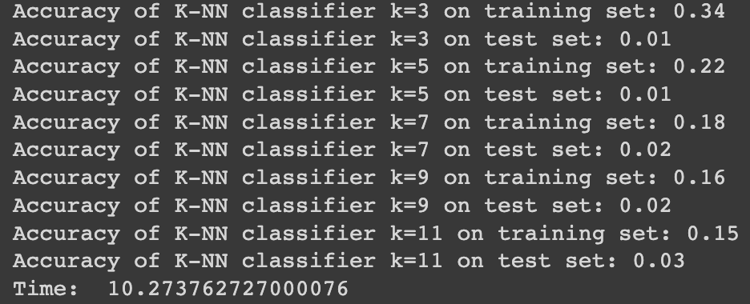
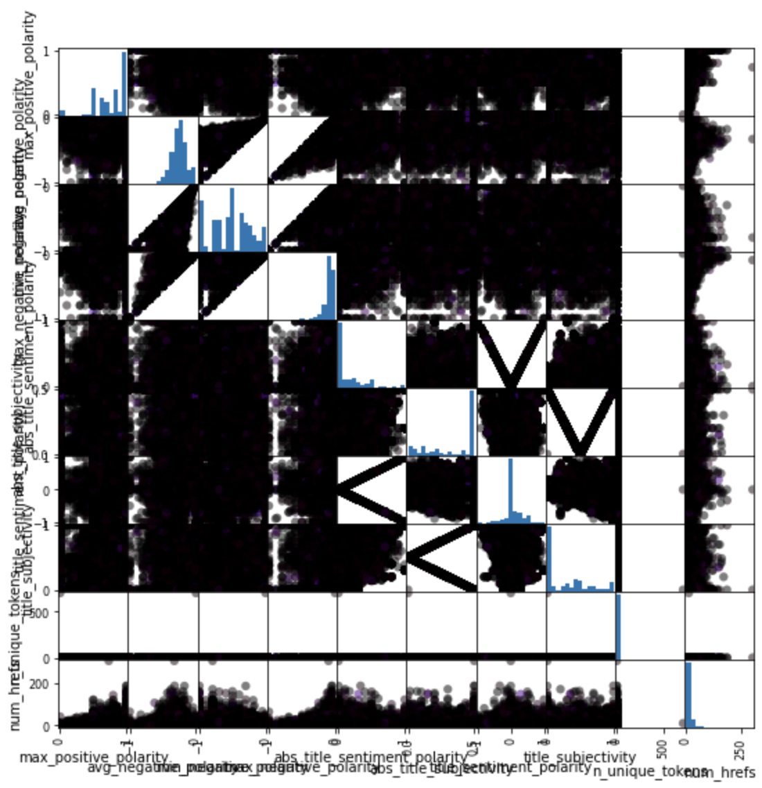

Objective:
Conducted exploratory analysis and implemented K-Nearest Neighbor (KNN), Support Vector Machine (SVM), and decision tree algorithms to teach the model
Results
Implementted K-NN, SVM, and decision tree
For a more in depth look at the code please click here


K-NN calssifier on K=3,5,7,9,11 Scatter Matrix